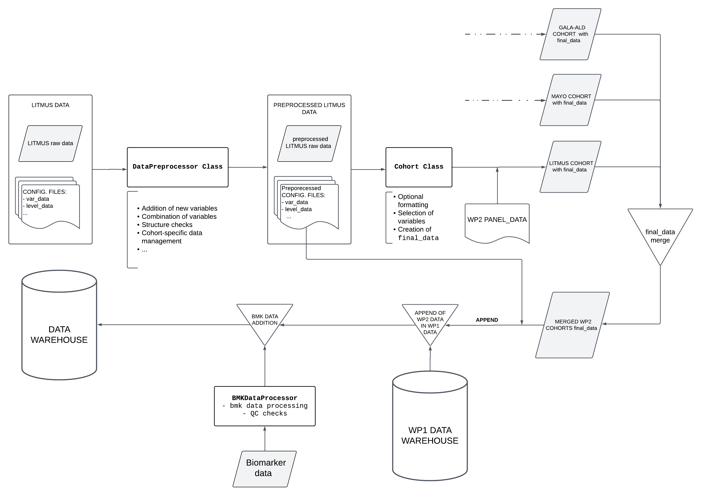

Overview
Dataflow
This section describes the data flow and ETL process, from the data reading to data export in various formats.
The data processing follows these steps, which are explained in detail in this document:
- Data Reading: Reading of all data required for the creation of the data warehouse. Specifically, the files described in initial_data_configuration are read.
- Data Preprocessing: An initial transformation of the data is performed, where some variables are added and combined. This process allows each cohort to be treated individually and specific changes to be applied to that cohort.
- Cohort Instantiation and Processing: For each cohort, a
Cohortobject is created. This centralizes the formatting and homogenization of the cohorts to produce a curated database with a consistent format across all cohorts. - Cohort Quality Control: Quality control is performed for each cohort to validate the transformations carried out in the previous steps.
- Cohort Merging: Once the different cohorts with homogenized data have been created, they are merged into a new
Cohortobject (namedliveraim). Two important actions are performed in this cohort:- The variable
liveraim_idis added, a common format identifier. - The different panels (in
DataFrameformat) that will later be exported are created.
- The variable
- Biomarker data management:
- Exportation to Files: The created panels are exported as
.featherand.csvfiles for further analysis. - Exportation to MySQL Database: A connection is made to MySQL, where the various tables and relationships of the schema are created, and the data is exported to SQL format.
The following image describes schematically the ETL process:

Data Reading
Data reading is handled through the DataReader class. This class is responsible for reading the following files for each cohort:
var_data (.xlsx): A .xlsx file that is loaded into the code as aDataFrame.level_data (.xlsx): A .xlsx file that is loaded into the code as aDataFrame.comb_var_data (.json): A .json file that is loaded into the code as a dictionary.databases (variable): For each cohort, there will be one or more versions of the database.DataReaderreads each version in its respective format (.dta,.sav, ...) and loads them into the code aspandasDataFrames. These dataframes are stored in a dictionary where the key is the version name (i.e., the date when the DB version was received) and the value is the DataFrame containing the database.
Additionally, it reads the data related to the final structure of the panels. This is stored in the panel_metadata (.xlsx) file. Since this is a .xlsx file with multiple sheets, it is loaded into the code as a dictionary where the key is the sheet name (i.e., the name of the panel) and the value is a DataFrame with the content of the sheet.
These data are stored in the DataReader.all_data attribute, a dictionary with the following structure:
all_data:
<cohort_name_1>: # Name of the cohort
data: <database_versions_dictionary> # Dictionary containing each database version
var_data: <var_data_file> # Excel file containing var_data
level_data: <level_data_file> # File containing level_data
comb_var_data: <comb_var_data_file> # File containing comb_var_data
<cohort_name_2>: # Name of the next cohort
data: <database_versions_dictionary> # Dictionary containing each database version
var_data: <var_data_file> # Excel file containing var_data
level_data: <level_data_file> # File containing level_data
comb_var_data: <comb_var_data_file> # File containing comb_var_data
...
panel_data: <panel_data_file> # Dictionary with panel_data information
This process is carried out for the data of each WP. In particular, each WP will contain not only the various data related to the cohort databases and configuration files but will also have its own panel configuration document, which may differ from those of other WPs. Therefore, when using the DataReader class, one must specify both the list of cohort names to be read and the WP they belong to (currently, only WP1 and WP2 can be specified).
Note 1: Currently, only data from the same WP1 can be read at once due to the structure of the code. In future versions, reading all cohorts at once will be possible (probably if no WP is provided).
Note 2: The data warehouse will be created using all versions of the cohort databases, up to the most recent one. This allows for more detailed tracking of patients who have entered and exited in each version. How the different versions are managed is explained in the next section, Data Preprocessing.
These files described above are essential for the correct processing of the data. To see the structure of these files, refer to the section initial_data_configuration.
The variables that store the filenames to be read, as well as the directories where these files are located, are defined in the module main_config.
Refer to data_reading_utils for more details on the internal workings of DataReader and the data reading process.
Data Preprocessing
Once the initial data is loaded, an instance of the DataPreprocessor class is created for each cohort. This instance takes as parameters all the elements from all_data[cohort_name], as well as the name of the respective cohort. This data is stored in the atributes cohort_databases, vara_data, level_data, var_comb_data and cohort_name respectively.
DataPreprocessor performs the following actions:
- Creation of
VarDataobject - Merging database versions
- ID transformations
- Addition of new variables
- Combination of variables
- IDs dropping
- Cohort-specific transformations
The aim of this class is to prepare the data from each cohort for the formatting and homogenization process, which requires a specific structure. This class is designed to handle each cohort individually and allows for specific adjustments to be made for each cohort, adapting to the particularities of each one.
Creation of VarData object
The VarData object is responsible for centralizing all the configuration data and metadata of the core variables (both the variables from the original cohort and those calculated during execution). It allows easy access to every variable property and facilitates the merging of different cohorts into one. For further information on the VarData object, its configuration, and functionality, please check the section VarData.
This object is instantiated for each cohort using the data contained in the var_data and level_data dataframes, as well as the var_comb_dict dictionary. Once created, it will be used to perform the proper transformation of the raw data (i.e., the previously mentioned objects var_data, level_data, and var_comb_data will no longer be used).
This object will be stored in the attribute DataPreprocessor.varData of the class to be used during data harmonization, quality control, and exportation.
Merging database versions
The dictionary containing the cohort database versions is stored in the attribute DataPreprocessor.cohort_databases. From the dataframes of each version, a single dataframe will be generated that contains, for each patient present in at least one of the versions, the latest available data (i.e., the data from the most recent version in which they appear).
Additionally, the variable status is added. This categorical variable can take 3 values:
finished: Patients who appear in the latest version of the cohort database, and the cohort is already closed.ongoing: Patients who appear in the latest version of the cohort database, and the cohort is still ongoing.withdrawn: Patients who do not appear in the latest version of the cohort database.
The variable date_version (str) is also added, indicating the version from which each patient's data is extracted.
Note: During this process, it is required that the variables in the databases (and their names) do not change between versions. Checks are performed to ensure compatibility between versions, and if they are not compatible, only the DataFrame form the latest version will be used, and the previous ones will be ignored.
To obtain this single dataframe, the following steps are followed:
- The
date_versioncolumn is assigned to each dataframe from each version. This column will contain the version to which that data corresponds (i.e., all columns in the same dataframe will have the same value). - All versions of the database are concatenated (vertically). This requires the structure of the dataframes to be compatible.
- The rows are sorted according to the
date_versionvariable. - Rows with duplicate values in the
id_varcolumn (the patient identifier) are removed, keeping the latestdate_version. - The
statusvariable is added by verifying if thedate_versionof each patient corresponds to the latest version.
Since status will be one of the core variables in the data warehouse, the varData attribute is updated to include this variable.
this new dataframe is stored in data attribute.
ID transformations
The format of patient identification variables can vary significantly between cohorts (even at the intra-cohort level), and the identifiers from laboratories may present (and do present) certain inconsistencies and errors compared to the cohort identifiers.
To address this issue, the ID variables of all cohorts are transformed, ensuring that there is a correspondence between the IDs from the cohorts and those from the laboratory data. The following transformations are performed:
Addition of 0's: A significant number of IDs contain a hyphen in the middle of the identifier (e.g.,1055-12). This leads to errors if, for example, the same patient is registered as1055-0012in another database. To prevent this, zeros are added after the hyphen to ensure that all identifiers have the same length (after the hyphen). In the current version, this length has been set to 5. Thus, after the transformation, both identifiers would be converted to1055-00012.Deletion of blank spaces: All blank spaces in the IDs are removed.Deletion of typos: Some symbols, such asº, $, etc., are considered typos and are removed from the ID if present.Uppercasing: All letters in the identifiers are converted to uppercase (if they are not already). Thus, the identifiers such asglu1234andGLU1234would both be transformed intoGLU1234.
IDs dropping
Some patients must be removed from the database, often because they have duplicate entries for certain values. This may occur, for example, due to errors when entering IDs into the databases. The file ids_to_drop.txt, located in the data directory (see Structure of the Project Directory), contains the list of IDs that must be removed from the final DW.
During the preprocessing of each cohort, the system checks whether the identifiers listed in this file are present in the database, and if so, their entries are deleted.
Addition of new variables
Once a single dataframe with the database is created, the following variables are added to the data dataframe attribute:
birth_date: Obtained by combining the patient's age with the date of entry into the cohort.exit_date: Date of exit from the cohort if the patient is not ongoing, or the current date at the time of code execution otherwise.cohort: The name of the cohort to which the data belongs.work_package: The work package which the cohort comes from.
Note: Just as with the
statusvariable, since these new variables will be core variables, thevarDataattribute will be updated accordingly (adding the metadata of the respective variable).
Combination of variables
If the var_comb_data parameter is passed during the initialization of DataPreprocessor, it will be used to combine the variables specified in that parameter. The primary goal here is to reduce the number of missing values by using variables that refer to the same magnitude but have different units.
To achieve this, DataPreprocessor utilizes the VarCombiner class, which is instantiated with a dataframe (in this case, the data attribute) and a dictionary that defines the variable combinations (in this case the var_comb_dict attribute). It is recommended to consult the section comb_var_data file for details on the internal structure of the dictionary. Additionally, refer to the section Class VarCombiner for more information on how the class works.
For each variable to be combined, VarCombiner sequentially checks whether a variable with a certain magnitude is missing. If it is not missing, the value of that variable is taken as the final value (applying the appropriate conversion factor). If the value is missing, it moves on to the next variable referring to the same magnitude (but with different units) and performs the same check. If all variables in the iteration are missing, NaN is assigned as the final value.
To illustrate this, suppose the var_comb_data dictionary is as follows:
{
"glc": {
"glc": 1,
"glc_mg_dl": 0.055
},
"crea_mg_dl": {
"crea_mg_dl": 1,
"creat": 0.017
}
}
This indicates that two variables should be combined: glc (using glc and glc_mg_dl) and crea_mg_dl (using creat and crea_mg_dl). VarCombiner will first iterate over the pair "glc": {"glc": 1, "glc_mg_dl": 0.055}. The glc variable (the first key) will be calculated as described above: if glc (in this case, the key in the pair "glc": 1) is not missing, this value will be used for the glc variable. Otherwise, it will check if glc_mg_dl is missing. If it is not missing, the value of glc_mg_dl multiplied by 0.055 will be used as the final value (where 0.055 is the conversion factor to convert glc_mg_dl units to glc units).
The processing for crea_mg_dl is entirely analogous.
The final result is that in the data attribute, the glc and crea_mg_dl variables will be populated with values from other compatible variables.
Cohort-specific transformations
The following section describes the specific modifications applied to each cohort:
Liverscreen
Temporary: Currently, one of the database versions (20241223) includes the Ever smoker level in the smoke variable, which was not present in previous versions. This level is encoded with the value 1.5. These values are mapped to the string "Ever smoker", a notation that is more consistent with the rest of the versions.
Decide
Some patients in the Decide cohort are also present in the Liverscreen cohort (those whose ID starts with 1056). These patients are removed from the cohort to avoid duplicates.
Alcofib
Some heterogeneity in variables with percentage units can be found at the cohort level. This means that, for the same variable (with percentage units), some values are given as actual %, while others appear to be given per unit (i.e., as a proportion). To address this issue, the harmonize_percent function is called, which transforms all the values into percentages.
To achieve this, the function multiplies by 100 all the values below a certain threshold (currently set to 1), assuming that any value lower than 1 is given as a proportion rather than a percentage.
Warning: This "two units" situation is inferred from the nature of the data and the variables. This means that there has been no strict confirmation of this issue yet. However, as it is the best explanation for the inconsistency, the transformation is applied. Ideally, this should be verified with the individuals responsible for the cohorts where these transformations are performed.
Glucofib
Similarly to the Alcofib cohort, some heterogeneity in variables with percentage units can be found at the cohort level. This means that, for the same variable (with percentage units), some values are given as actual %, while others appear to be given per unit (i.e., as a proportion). To address this issue, the harmonize_percent function is called, which transforms all the values into percentages.
To achieve this, the function multiplies by 100 all the values below a certain threshold (currently set to 1), assuming that any value lower than 1 is given as a proportion rather than a percentage.
Warning: This "two units" situation is inferred from the nature of the data and the variables. This means that there has been no strict confirmation of this issue yet. However, as it is the best explanation for the inconsistency, the transformation is applied. Ideally, this should be verified with the individuals responsible for the cohorts where these transformations are performed.
Marina1
No transformations specific to this cohort are currently performed.
Metronord
No transformations specific to this cohort are currently performed.
Gala-ald
No transformations specific to this cohort are currently performed.
Cohort Instantiation and Processing
Once the cohort data has been preprocessed, it is formatted so that all cohorts have a homogeneous structure and can be subsequently combined. The central element of this processing is the Cohort class, and the VarData object mentioned earlier is essential for its correct operation.
For each cohort, a Cohort object is instantiated, which uses the (already preprocessed) attributes of DataPreprocessor: data (as the raw_data parameter), and VarData. It is important to note that the VarData object contains a dictionary of Var objects (for further information, check the section Var). Each of these Var objects contains data from a particular variable that will be used during the harmonization process. It contains the following information (it is not an exhaustive list):
- Initial variable name in the cohort.
- Final variable name in the common database.
- Final variable datatype.
- Conversion factor (if needed).
- mapping dictionary for categorical variables
- ...
Additionally, the cohort name (parameter cohort_name), the ID variable name (parameter id_variable), the inclusion date variable name (parameter date_variable), and the cohort status (parameter status) are introduced as parameters. Optionally, a dictionary with the structure of comb_var_data can also be provided. For more detailed information about these objects, refer to the section initial_data_configuration.
The instantiation of the cohort concludes with a call to the Cohort.homogenize_data method. This method creates a copy of the raw_data attribute (which was initialized with the preprocessed cohort database, i.e., the raw_data parameter), formats it, and stores it in the homogeneous_data attribute. In general terms, the data formatting follows these steps:
- Selection of the subset of
raw_datawith the core variables. - Translation of the variable names (columns of the DataFrame) to the final names defined in
VarData. - Formatting of the variables. It iterates over the
VarDatafor each of the selected variables and:- Verifies the datatype assigned in
Varand applies the appropriate datatype to that column. - If the variable is numeric, applies the appropriate conversion factor.
- If the variable is categorical, maps the original levels to the final levels. This mapping is defined in the attribute
Var.var_map.
- Verifies the datatype assigned in
The result for each cohort should be the same: a DataFrame with the same structure and format stored in the homogeneous_data attribute. Currently, the structure of the database allows cohorts with different variables each.
For more details on the specific implementation of the Cohort class and its methods, refer to the section dedicated to the cohort_utils.
Cohort Quality Control
After the creation and harmonization of each cohort object, a quality control check is performed and stored in an instance of QCchecker object. For more details on the specific implementation of the QC checks, refer to the section qc_checks_utils_doc.
Cohort Merging
Once all cohorts have been formatted, they are merged using the merge_cohorts function, defined in the cohort_utils module. merge_cohorts takes a list of already instantiated cohorts (i.e., they contain the homogeneous_data attribute) and performs the following actions:
- Concatenates (vertically) the
homogeneous_dataattributes (DataFrames) from each cohort, ensuring that the resulting DataFrame combines all the data from the individual cohorts. - Instantiates a ConfigDataManager object, which allows to merge properly all the
VarDataobjects from each cohort. - Instantiates a new
Cohortobject using the previously created merged elements. This cohort is namedliveraimfrom now on.
Once the new cohort object is created, the set_id method is called. This method generates a new column in the homogeneous_data dataframe attribute, populated with a unified ID for each patient. The structure of this new ID follows the format LAxxxxx, where xxxxx is a sequential number starting from 1 and increasing up to the total number of rows in the dataframe (i.e., the position of the last patient in the dataframe). The IDs are assigned in ascending order throughout the dataframe.
Warning: As a result, the correspondence between the original ID (referred to here as
cohort_id) and the unified ID (referred to here asliveraim_id) may vary depending on the position of each patient’s data within thehomogeneous_datadataframe. This implies that the mapping betweencohort_idandliveraim_idcan change between executions.
For more details on the functionality of this process, refer to the section merge_cohorts function.
Biomarker data management
To check the structure of the processed biomarkers data panel check the subsection Biomarkers table. There are two different sources of biomarkers data:
-
Partners: third party partners (name Nordic, Roche and Hospital Clínic) are responsible for the analysis and transfer of the biomarkers data, that will be then processed and integrated into the data warehouse. This process is described in the following sections Data Reading and Data Processing.
-
Data Warehouse: Some biomarkes are computed using the variables from the data warehouse, formatted and merged with the biomarkers data obtained from the partners. This process is briefly described in Calculation of computed Biomarkers.
Data Reading
The processing of biomarker data is performed immediately after the processing of cohort data, as the cohort IDs are used to validate the IDs in the biomarker data.
Biomarker data is received from different providers, namely Nordic, Roche, and Hospital Clínic, in the current version. Since each provider may send the data split into different batches, and similarly to the cohort data case, the reading process for biomarker data is handled by the BMKDataReader class. For each provider, an instance of BMKDataReader is created, resulting in a dictionary (stored in the bmk_data_dict attribute) where the keys are the version dates (batches) and the values are the dataframes containing the data.
For more details on the organization of the biomarker data directory and the specifics of the reading process, please check the section class DataReader.
Data Processing
Once read, an instance of BMKDataProcessor is created for each provider. This instance is responsible for harmonizing and processing the biomarker data so it can be merged with data from other biomarkers. To instantiate this object, two main parameters are required, in addition to the biomarkers_data: the name of the provider (which allows calling the specific configuration class to process its data) and the set of common Liveraim IDs from the cohort database. The following section describes the general transformations applied to the data from each provider:
-
For each version/batch received from the provider, the following transformations are applied:
-
The columns of the DataFrame are renamed to follow a common naming convention.
-
Provider-specific transformations are applied via the
BMKHarmonizerclass. This will be covered in more detail below. The result of this transformation is a DataFrame with a common format and structure, both among batches from the same provider and between different providers. -
The original IDs are stored to generate a mapping between these IDs and the harmonized ones. This is mainly for debugging and traceability purposes — it allows tracing back the original IDs in the biomarker data that do not match the IDs in the cohort database.
-
ID harmonization: The IDs are transformed to fix inconsistencies between cohort data and biomarker data. The transformations applied are described in the section ID transformations.
-
Duplicate removal: If any duplicate records for ID and biomarker are found within a batch, they are dropped and removed from the DataFrame, retaining none of them.
-
Blinding of biomarkers: The biomarker names (column
variable) are mapped to anonymize them. In the current version, they are mapped to uppercase letters. -
A quality control process is performed on the transformed data and stored as a DataFrame in a dictionary, whose key will be the version/batch name. These checks are detailed below.
-
-
The DataFrames from each version are then concatenated (vertically) to obtain a single DataFrame (which may contain duplicates).
- The dictionary mapping the original IDs to the transformed IDs is created and stored in the
ids_transformation_dictattribute. - The appropriate data type is applied to each column.
-
Consistency checks: Two main checks are performed at this point:
-
ID matching: The IDs in the biomarker data are matched with those provided from the cohort data. If an ID from the biomarker data does not match any of the cohort IDs, it is dropped from the DataFrame and ignored.
-
Duplicate removal: If any duplicates are found for the same biomarker and ID, the duplicates are dropped (currently keeping only the entry with the latest
validation_date). This is due to the fact that there may be patient overlap between batches from the same provider.
-
-
A new column (
liveraim_idby default) is generated by mapping the transformed IDs to the Liveraim IDs from the cohort database. At this point, some identifiers might not match any of the provided Liveraim IDs (and will be subsequently dropped from the final data). -
Missing values drop: Rows with missing numeric values for a given biomarker are excluded from the DataFrame.
-
Scaling: The values for each biomarker (currently in the
valuecolumn) are scaled into a specified range ([0, 1] by default). The current version uses a Min-Max scaling method:
-
Normalization: The z-score of the numeric value (grouped by biomarker) is computed and added as a column. To do so, the following formula is used:
\[ X'_i = \frac{X_i - \mu}{\sigma} \]Where:
- \(\mu\) is the mean of the values for the given biomarker.
- \(\sigma\) is the standard deviation of the values for the given biomarker.
-
Quintiles: quintiles are computed (grouped by biomarker) and added as a column. Labelled from 1 to 5.
As mentioned above, this process is performed separately for the data from each provider. Finally, all the DataFrames (with compatible structures) are merged into a single one, ready to be exported.
Provider-specific transformations
Hospital Clínic
The raw data from this provider may include the symbols < or > in the numeric value field of some biomarkers. These symbols indicate whether the value is below or above the quantification limit. Values without any symbol are considered to fall within the detectable range. Accordingly, the main specific transformations applied are:
-
Comments column: A new column called
commentsis created based on the biomarker value column. If any of the above symbols are present, the corresponding comment is added to this column. If no symbol is found, the default value is an empty string. -
Symbols processing: The symbol (if any) is extracted from the biomarker value and stored in a new column named
limit_detect, which contains only the symbol. If no symbol is present, the default value ispd.NA. Additionally, a new column callednumeric_valueis created, containing only the numeric part of the biomarker value (asfloattype).
Nordic
-
Biomarker value formatting: In the biomarker value column, values with the string "ND" (indicating a missing value) are replaced with an empty string. Then, the column is converted to
float, assigningnp.nanto empty strings. -
Addition of
limit_detectcolumn: Based on thecommentscolumn in the raw data provided by Nordic, the new column calledlimit_detectis created, following the convention described in Hospital Clínic transformations. -
Comments mapping: Comments in the
commentscolumn are mapped to numeric codes using dictionaries defined in the configuration module. -
Value clipping: The raw data from Nordic includes the value of the analysis (
numeric_value), even when it falls outside the detection range. To ensure consistency and preserve the structure of the panel, values outside the detection limits (those bounds have been provided by Nordic) are replaced with the appropriate limit value:- Values below the detection limit are replaced with the lower detection limit.
- Values above the detection limit are replaced with the upper detection limit.
Roche
No data from Roche has been received yet - Not yet implemented
Calculation of computed Biomarkers
As some biomarkers are analyzed and provided by external partners, certain biomarkers need to be computed using variables from the current data warehouse. The following section briefly describes the process of computing and formatting these biomarkers.
The class responsible for performing these computations is BMKCalculator, which is instantiated with the already processed data warehouse (in particular, with a Cohort object). For more details on the implementation of this class, refer to the section BMKCalculator class.
For each biomarker that needs to be computed, a specific Python function has been implemented. This function returns a pd.Series object with the computed values. The following steps are performed to obtain a compatible DataFrame that can be merged with the one generated by BMKDataProcessor:
-
A biomarker-specific function (already defined) is applied to compute the values using the harmonized data warehouse. The resulting values are stored in the
numeric_valuecolumn. -
The
variablecolumn, containing the name of the biomarker (in the "blinded" form), is added. -
The required columns (
liveraim_id,inclusion_date,numeric_value, andvariable) are selected and assembled into a DataFrame.Note: Date used as
validation_datevariable for computed biomarkers will be, at this version, theinclusion_datevariable. -
The columns
scaled_value,quintiles, andz_scoreare added as described in the Biomarker Data Processing section. -
The columns
commentsandlimit_detectare added to match the common structure.Warning: In the current version, no detection limits are available for the computed biomarkers. Accordingly, all records will contain default values in the
limit_detectandcommentscolumns (pd.NAand"", respectively). Furthermore, no clipping is applied to the biomarker values.
Each biomarker data results in an individual DataFrame. These DataFrames are then merged into a single, consistent DataFrame that can be seamlessly combined with those produced by BMKDataProcessor.
Exportation to Files
If the variable EXPORT_FILES defined in the main_config module is set to True, the data for each of the final panels will be exported as files. In the current version, the data is exported to .csv and .feather formats.
Exportation to MySQL Database
After exporting the database as files, the MySQL database is created. The module responsible for handling this export is sql_exporting_utils. Specifically, the SQLExporter class, defined in this module, centralizes the connection to the database, the creation of tables, and the export of data.
The SQLExporter class is initialized using the panel_metadata DataFrame dictionary (this object has not been modified at any point). This dictionary specifies the structure of each of the final panels in the database. For more information on the structure of the panel_metadata file (and the corresponding panel_metadata object), see the section panel_data file.
SQLExporter performs the following actions sequentially:
- Creates an
engineobject, which establishes the connection to the database based on the configuration specified in theconnection_configmodule. For more information on the connection parameters, see the sectionconnection_configmodule. - Creates the database structure: It defines the tables, the format of each table (which variables each contains, whether it's in long or wide format, etc.), and the relationships between them. To do this, it uses the configuration data present in the
panel_metadataobject. - Establishes the connection to the database and generates the previously defined tables in the MySQL database.
- Iterates over each of the DataFrames in
liveraim.final_dataand inserts the data into the corresponding table.
Note: The
engineobject does not immediately create the connection, but dynamically manages connections as needed. Therefore, until the tables are explicitly created in the database (and then populated), it does not actually connect to the database. Similarly, step 2 is internal to theSQLExporterclass, meaning that when the table and relationship structure is created, it is stored in an internal object within the class. It is in step 3 that this structure is executed when an explicit connection to the database is established.